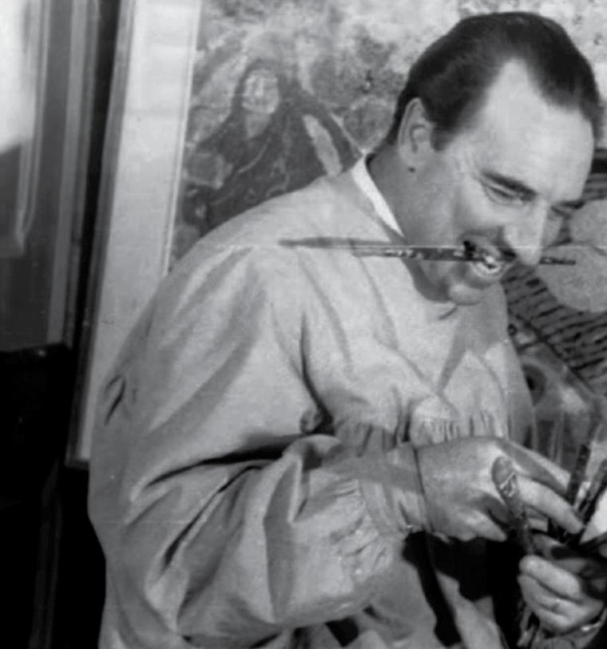

Jordi Freixas Cortés
L'home que va capturar tots els colors del Sol.

Jordi Freixas manegant els pinzells.
La seva trajectòria
- 1917 - Neix el 21 d’abril a Barcelona.
- 1940 - Primera exposició a la sala Busquets.
- 1942 - Primera Medalla de Paisatge del Saló de Tardor (Mallorca).
- 1961 - Premi de la Excma. Diputació Provincial de Barcelona.
- 1962 - Premi de la Excma. Diputació Provincial de Biscaia.
- 1966 - Premi Exposició Hogares Mundet.
- 1981 - Premi Nacional Valentí.
- 1984 - Mor el 4 de febrer de 1984 amb 66 anys.
- 2017 - Exposició més recent (al Casal de Tiana).
Visita la seva pàgina web aquí.